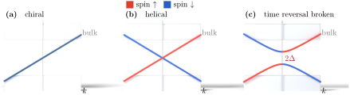
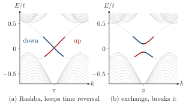

Page 14 of 16 of this session
3.11b Kramers protection of the helical edge
The helical pair of Section 3.11 was built from two spin sectors that are not coupled. What protects it when a term of the Hamiltonian mixes the two spins? We will now see that the protection comes from time-reversal symmetry, through Kramers’ theorem. The crossing of the two edge states stays closed for any perturbation that keeps this symmetry, and only a magnetic perturbation opens a gap.
\[C_\uparrow = \pm 1, \qquad C_\downarrow = -C_\uparrow, \qquad C = C_\uparrow + C_\downarrow = 0, \qquad C_s \equiv C_\uparrow - C_\downarrow = \pm 2. \tag{3.9}\]
These are the Chern numbers of the quantum spin Hall insulator of Section 3.11. The two spin sectors have opposite Chern numbers \(C_\uparrow\) and \(C_\downarrow\), so the total \(C\) vanishes. The spin Chern number \(C_s\) does not, and it gives each edge a helical pair, which is one state of each spin with opposite directions.
So far we have treated the two spin sectors as independent, and here there is a subtle point. If spin were perfectly conserved, we could speak separately of the Chern number for spin-up and the Chern number for spin-down. Real materials have terms that mix spin, and spin-orbit coupling itself mixes spin to some degree, so one may worry that these terms could smoothly remove the protection of the helical edge states.
They cannot, as long as time-reversal symmetry survives, and the reason is Kramers’ theorem. For spin-1/2 electrons the time-reversal operator squares to \(-1\), which forces an exact twofold degeneracy at every momentum that is its own time-reversal partner. These are the time-reversal-invariant momenta, which are \(\Gamma\) and \(X\) in this setup. This degeneracy exists with or without spin-mixing terms, so the crossing of the edge states at these momenta cannot be gapped by any perturbation that respects time-reversal symmetry, but only by one that breaks it.
With time-reversal symmetry, the time-reversal operator \(T\) of a spin-\(1/2\) electron obeys
\[T^2=-1, \qquad T\,H(k)\,T^{-1}=H(-k).\]
Every state then has a partner \(T|\psi\rangle\) with the same energy, at the opposite momentum, that is orthogonal to it. At a momentum that is its own partner, \(k=-k\) up to a reciprocal lattice vector, every level is twofold degenerate. So a perturbation that keeps time reversal cannot open a gap at the crossing of the helical edge, and only one that breaks it can.
The steps From the square of time reversal to the degeneracy at a time-reversal invariant momentum
We use two properties of \(T\). It is antiunitary, meaning that \(\langle T\varphi|T\psi\rangle=\langle\psi|\varphi\rangle\) for any two states, and for a spin-\(1/2\) it obeys \(T^2=-1\). The problem at the end of this page shows both for \(T=i s_y K\).
The first step is that a state and its partner are orthogonal. We use the first property with \(\varphi=T\psi\), and then \(T^2=-1\),
\[\langle\psi|T\psi\rangle = \langle T(T\psi)|T\psi\rangle = \langle T^2\psi|T\psi\rangle = -\langle\psi|T\psi\rangle,\]
so \(\langle\psi|T\psi\rangle=0\), and \(T|\psi\rangle\) is a different state. Without spin we have \(T^2=+1\), and this argument gives nothing.
The second step is the energy of the partner. Let us take an eigenstate at the momentum \(k\), with \(H(k)|\psi\rangle=E|\psi\rangle\). The symmetry \(T\,H(k)=H(-k)\,T\) gives
\[H(-k)\,T|\psi\rangle = T\,H(k)|\psi\rangle = E\,T|\psi\rangle,\]
meaning that \(T|\psi\rangle\) is an eigenstate at \(-k\) with the same energy. For a generic \(k\) the two partners are at different momenta, and nothing forces a degeneracy at one momentum.
The third step is a momentum that is its own partner. For an edge of period \(a\) these are \(k=0\) and \(k=\pi/a\), since \(-\pi/a\) and \(\pi/a\) differ by \(2\pi/a\). There \(|\psi\rangle\) and \(T|\psi\rangle\) are two eigenstates of the same matrix \(H(k)\) with the same energy, and they are orthogonal by the first step. So every level is twofold degenerate at these momenta.
The last step is the perturbation. The two branches of the helical edge are such a pair at the momentum where they cross. If we add a term \(V\) that keeps time reversal, the new Hamiltonian obeys the same symmetry, and the three steps hold again. The crossing can move in energy and the branches can bend, but the two states stay degenerate. A term that breaks time reversal removes the second step, and then the two states can split.
This protection mechanism is different from, and stronger than, what the picture of two independent Chern insulators would suggest by itself. Figure 3.6 compares the chiral and helical edge dispersions and shows what a term that breaks time-reversal symmetry does to the protected crossing.

Disorder makes this difference concrete. Helical edge states survive disorder that preserves time-reversal symmetry, since the band structure changes but the gapless crossing at the edge remains. On the other hand, disorder that breaks time-reversal symmetry opens a real gap in the edge spectrum and removes the protection completely.

A magnetic field breaks time reversal, so it is the test of this protection in a transport measurement. In monolayer WTe\(_2\) the quantum spin Hall effect is observed up to \(100\) K. The conductance is about \(e^2/h\) per edge when the edge is short, and a magnetic field suppresses this conductance. The gap that the field opens is of the Zeeman type, which indicates that the edge has a Kramers degenerate point. The measurement is in this article, which is the one of the note “in the lab” of the notebook session3.ipynb. In the model this is panel (b) of Schematic 3.16, where an exchange field opens the gap at the crossing.
Close to its crossing, a helical edge has the Hamiltonian
\[H = v\,k\,s_z.\]
Here \(k\) is the momentum from the crossing and \(v\) is the velocity. The matrix \(s_z\) is the spin. We add one term to \(H\). Which term opens a gap at \(k=0\)?
Show the answers
- A. ✗ False
This is false. The energies are \(\pm k\sqrt{v^2+\alpha^2}\). For \(v=1\) and \(\alpha=0.5\) they are \(\pm1.12\,k\), which still cross at \(k=0\). This term keeps time reversal, since both \(k\) and \(s_y\) change sign.
- B. ✓ True
This is true. The energies are \(\pm\sqrt{v^2k^2+b^2}\), with a gap \(2|b|\) at \(k=0\). This term breaks time reversal, since \(s_x\) changes sign and \(b\) does not, so Kramers’ theorem does not protect the crossing.
- C. ✗ False
This is false. The energies are \(V_0\pm vk\). For \(V_0=0.3\) the crossing moves to the energy \(0.3\) and stays closed. A potential keeps time reversal.
Each picture shows the bands of a ribbon close to \(k=\pi\). The states of the lower edge are in color. Red is spin up along \(z\) and blue is spin down. The dashed line marks \(k=\pi\), where \(k\) and \(-k\) are the same momentum. Which ribbon keeps time-reversal symmetry?
Show the answers
- A. ✗ False
This is false. The two branches have a gap of \(0.19\,t\) at \(k=\pi\), and Kramers’ theorem does not allow it when time reversal holds. This ribbon has an exchange field \(0.1\,t\) along \(x\) and no Rashba coupling. The field breaks time reversal.
- B. ✓ True
This is true. The two branches are degenerate at \(k=\pi\), and the picture is the same on both sides of the line with the two colors exchanged. This ribbon has a Rashba coupling \(0.1\,t\), which mixes the spins and keeps time reversal.
- C. ✗ False
This is false. The branches cross at \(k=\pi-0.2\), in units of the inverse lattice constant, and not at \(k=\pi\). Time reversal maps \(k\) to \(-k\), so it needs the same spectrum on both sides of the line. This ribbon has an exchange field \(0.1\,t\) along \(z\), which breaks time reversal. The crossing stays only because this field conserves \(s_z\).
Time reversal maps a state at \(k\) to a state at \(-k\). The two have the same energy. On an edge of period \(a\), the momenta \(k\) and \(k+2\pi/a\) are the same. At which momenta is the twofold degeneracy guaranteed?
Show the answers
- A. ✗ False
This is false. Take the edge Hamiltonian \(H=v\,k\,s_z\) with \(v=1\). At \(k=0.5\) the two energies are \(+0.5\) and \(-0.5\). The partner of a state at \(k\) is at \(-k\), which is a different momentum.
- B. ✗ False
This is false. The momentum \(-\pi/a\) is \(\pi/a\) minus \(2\pi/a\), so \(k=\pi/a\) is also its own partner. In a zigzag ribbon of the honeycomb lattice the helical edge states cross at \(ka=\pi\), and not at \(k=0\).
- C. ✓ True
This is true. These are the two momenta with \(-k\) equal to \(k\). There a state and its partner are at the same momentum, and they are different states since \(T^2=-1\).
The time-reversal operator of a spin-\(1/2\) electron is \(T=i s_y K\), where \(s_y\) is a Pauli matrix and \(K\) is the complex conjugation. Show that \(T^2=-1\). Then take a state \(|\psi\rangle\), its partner \(T|\psi\rangle\) and a Hermitian perturbation \(V\) that keeps time reversal, \(TV=VT\). Show that \(\langle T\psi|V|\psi\rangle=0\).
Solution
The matrix \(i s_y\) is real, with the rows \((0,1)\) and \((-1,0)\), so \(K\) commutes with it, and \(K^2=1\). Then
\[T^2 = (i s_y)\,K\,(i s_y)\,K = (i s_y)^2 = -1.\]
For the second part we use that \(T\) is antiunitary. The matrix \(i s_y\) is unitary and \(K\) takes the complex conjugate of a scalar product, so \(\langle Ta|Tb\rangle=\langle b|a\rangle\) for any two states. We read this relation from right to left with \(a=V\psi\) and \(b=T\psi\),
\[\langle T\psi|V\psi\rangle = \langle TV\psi|T^2\psi\rangle = -\langle VT\psi|\psi\rangle = -\langle T\psi|V|\psi\rangle.\]
The second equality uses \(TV=VT\) and \(T^2=-1\), and the last one uses that \(V\) is Hermitian. A number that is equal to minus itself is zero, so \(\langle T\psi|V|\psi\rangle=0\).
This matrix element is the amplitude to scatter an electron of the helical edge into its partner, which moves in the opposite direction. So a potential, a non-magnetic impurity or a Rashba coupling cannot backscatter the electron elastically, and cannot open a gap at the crossing. This is what protects the conductance \(e^2/h\) of a short edge. An exchange field \(b\,s_x\) is different, since \(T s_x T^{-1}=-s_x\), and it opens a gap \(2|b|\) in the edge Hamiltonian \(v\,k\,s_z\). In a measurement this is an edge conductance that a magnetic field suppresses.
Notebook check-in: session3.ipynb, “The quantum spin Hall state” (Core), “The robustness of the quantum spin Hall state” (Core) and “Topological invariant of the quantum spin Hall state”. The challenge is “Finite size effects in topological systems” (Challenge), which uses exchange coupling plus Rashba spin-orbit coupling.
Build the model with two copies of a Chern insulator and identify the helical pair of edge states by their spin projection and their propagation direction, which is the pattern in (3.9). Then add disorder that preserves or breaks time-reversal symmetry, and check that the gap only opens in the second case. The note “in the lab” in this notebook section points to the measurement in 1T\('\)-WTe\(_2\) that we mentioned above.
Try it. Run the three panels, without disorder, with non-magnetic disorder and with magnetic disorder. Change the amplitude 1. in hd.add_onsite(lambda r: 1.*(np.random.random()-0.5)) to 1.5. The crossing at the center stays gapless. In the third panel the amplitude 1. of add_exchange opens a gap at zero energy.